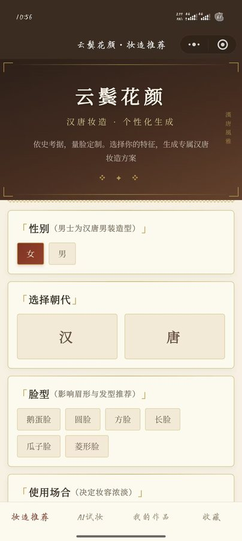
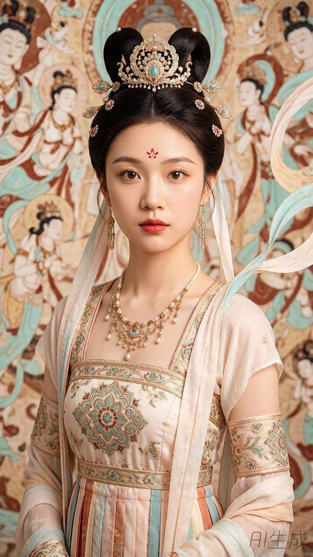
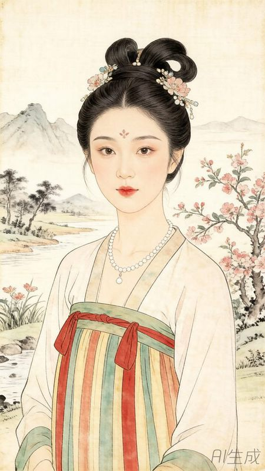
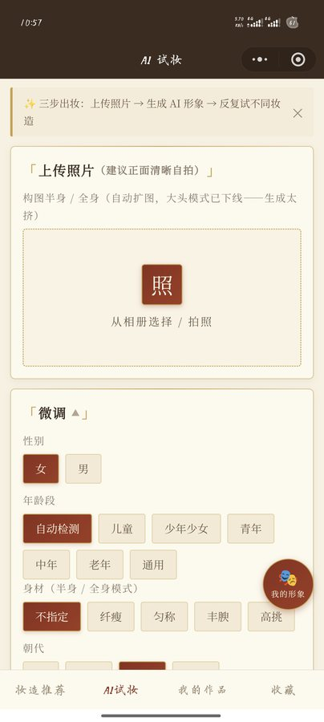
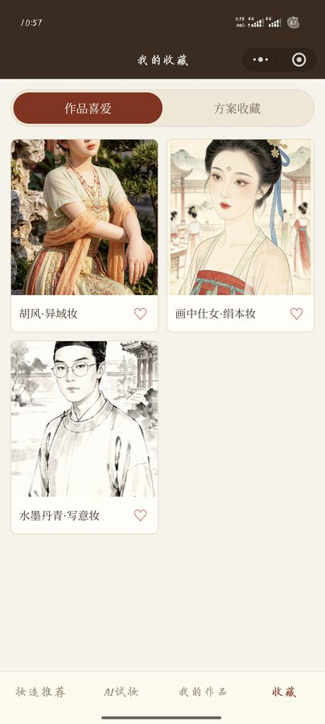

06
视频 · 体验演示
Video & Demo「云鬓花颜」暂无公开视频，体验方式为微信小程序体验版——扫码即可直接试用完整生成流程：

体验版二维码 · 微信扫码试用

项目角色：研究问题定义 · 考据知识库构建 · 生成系统设计 · 产品与全栈开发 · 五维评价体系 —— 从「照片 → 人脸分析 → AI 生成汉唐妆造 → 沉浸式试妆」全链路，到支撑毕业论文的研究闭环。
汉唐妆造存在于墓室壁画、文物与文献之中，公众可以直接看，却很难真正「体验」。 依托导师课题《基于 AIGC 人工智能生成艺术的文物数字化复刻与创新转化应用研究》 （以懿德太子墓壁画为样本，本人负责妆造与色彩分析方向），衍生出面向大众的「云鬓花颜」体验研究—— 用 AI 生成，让汉唐妆造不只是被看见，而是被体验、被考据、被理解。
项目的核心主张：AI 生成的「美」应该有据可查。每一件妆造输出，都对应可追溯的壁画 / 文献 / 考古来源， 生成结果附纹样考据注释——这使它区别于一般「AI 换脸」产品，成为一次数字媒体艺术与文化遗产研究的交叉实践。
自建汉唐妆造考据知识库（100+ 条目）。条目来源覆盖墓室壁画、文献考据、考古报告与文物图像， 按妆造要素组织为五大分支：
知识库是生成的前提：模型不是凭空想象妆造，而是从考据条目出发完成风格构建—— 这也让「六类考据风格 Prompt 体系」的每一类都能落在具体史料上。
设计上需要解决的关键问题：AI 风格迁移容易破坏用户身份特征。因此采用两阶段生成思路——
Prompt 结构逐项可解构：身份描述 + 妆造要素（发型 / 眉形 / 花钿 / 色彩 / 纹样）+ 风格限定 + 考据来源注释， 六类考据风格（敦煌、花钿中、龙妆等）共享同一套可复现的生成系统。


六类考据风格中的三类生成结果 · 各风格原始图与妆造生成图对照
微信小程序 + 云开发 + 腾讯混元大模型图生图 + 腾讯云 IAI 人脸识别，构建完整生成管线：


体验版已上线。生成链路「照片 → 人脸分析 → AI 生成汉唐妆造 → 沉浸式试妆」全流程可用， 生成结果附带纹样考据注释，五维评分反馈（考据准确度 / 生成质量 / 历史还原度 / 体验满意度 / 身份保持度） 持续采集数据并支撑毕业论文。
「云鬓花颜」暂无公开视频，体验方式为微信小程序体验版——扫码即可直接试用完整生成流程：
体验版二维码 · 微信扫码试用
这一项目同时具备艺术性（汉唐妆造的视觉呈现）、技术性（I2I 生成 + 人脸识别 + 小程序全栈）、 研究性（考据知识库 + 五维评价体系支撑毕业论文）、产品性（体验版上线，完整用户链路）。 它不是「用 AI 生成了几张唐妆照片」，而是一整套从考据到生成的系统设计。
毕业论文方向：《基于 AI 技术的汉唐妆造个性化生成与沉浸式体验研究》。
返回作品集首页